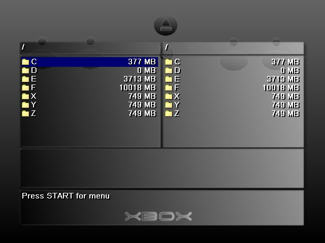
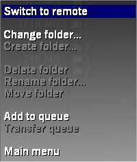
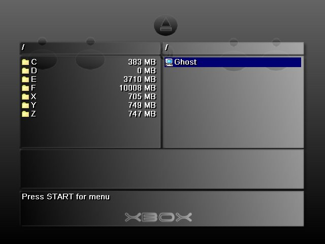
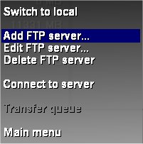
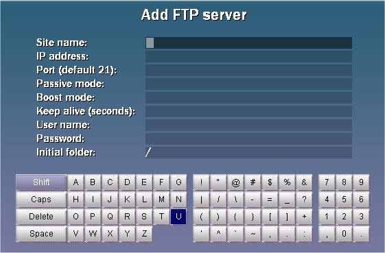
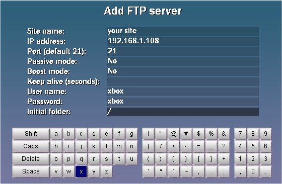

|
With Both Xboxes running Avalaunch
If you wish to transfer files directly from one xbox to another
then the easiest way would be to have both xboxes running Avalaunch.
Avalaunch will auto detect if another xbox is running avalaunch on your
network. You must be running the latest version however 0.48. If you
are running through a router there should be no problem detecting the
other xbox but if you are going straight through with a crossover cable
then you must manually input a static IP address in the avalaunch.xml
for each xbox. Do both of your xboxes have IP addresses? They do? Good
then lets transfer some files.
- First make sure both xboxes are on and at the main
screen.
- Go to the xbox that you want the files to go to
and open up the file manager.

- Go to the right hand portion by pressing right on
the thumbstick or d-pad.
- Press start to open the filemanager menu and
scroll to switch to remote and press the A button.

- There should now be a little icon of a computer on
the right hand
side of the filemanger with the IP address of the other Xbox.
Click on it to open up the contents of the
remote xbox's harddrive.

- Return to the left side of the file manager (the
xbox your
currently on) and go to the desired directory you wish to copy the
files to.
- Then go to the right hand side and select the
files you wish to transfer using the X button. Those
files will go into the Queue window at the bottom.
- Press the Start button to bring up the filemanager
menu and select Transfer Queue
- Avalaunch will now transfer the selected files.
With one Xbox running Avalaunch
If only one Xbox is running Avalaunch,
and the other Xbox with another Dashboard, then you will
have to manually set up a connection for the other xbox. You still need
to make sure that both xboxes have two different IP address and are
manually assigned
in the avalaunch.xml if your going straight through with a crossover
cable. Assuming that both xboxes have an IP address lets copy some
files.
- First from the avalaunch main screen access
the File Manager.
- Next go to the right hand side by pressing
right on your thumbstick or d-pad.
- Press Start to open the filemanager menu and
select Switch to Remote.
- Press start again to open up the filemanager
menu and select Add FTP Server.

- This will bring up a blank window in which
you can enter the required information to connect to the other xbox.

-
To navigate through the menu is easy. Left and Right triggers move you
up and down through the columns. And the controls are the same for
inputing text here as it is in the regular keyboard. A button will
select the desired character and the thumbstick moves though the
virtual keyboard.
- First you'll need a name for your connection.
Unless your setting up a
bunch of xboxes on a network that you'll want to access all the time
you can name it whatever you want, otherwise name it something you'll
remember ( ie. upstairs xbox, downstairs xbox). When you've finished
press the right trigger to move down.
- Next you'll need the IP address of the other
xbox. Type it in using the A button. The "."
in the IP address is the button below the three button on the keyboard.
Once you have the IP address filled in hit the right trigger again.
- For the port either leave if blank or if you
prefer input the number
"21", unless you've specified another port in the other dashboards
config file, in which case you'll need to input that number here. When
finished click the right trigger.
- For passive mode select no
- For boost mode select no
- For username type xbox
- For password type xbox
- Initial folder can be left blank

- Now your all set. Press the Y button
to save your connection.
- Select your remote connection with the A
button and transfer the files the same way you would if both xboxes
were running avalaunch as described above.
|

|
|